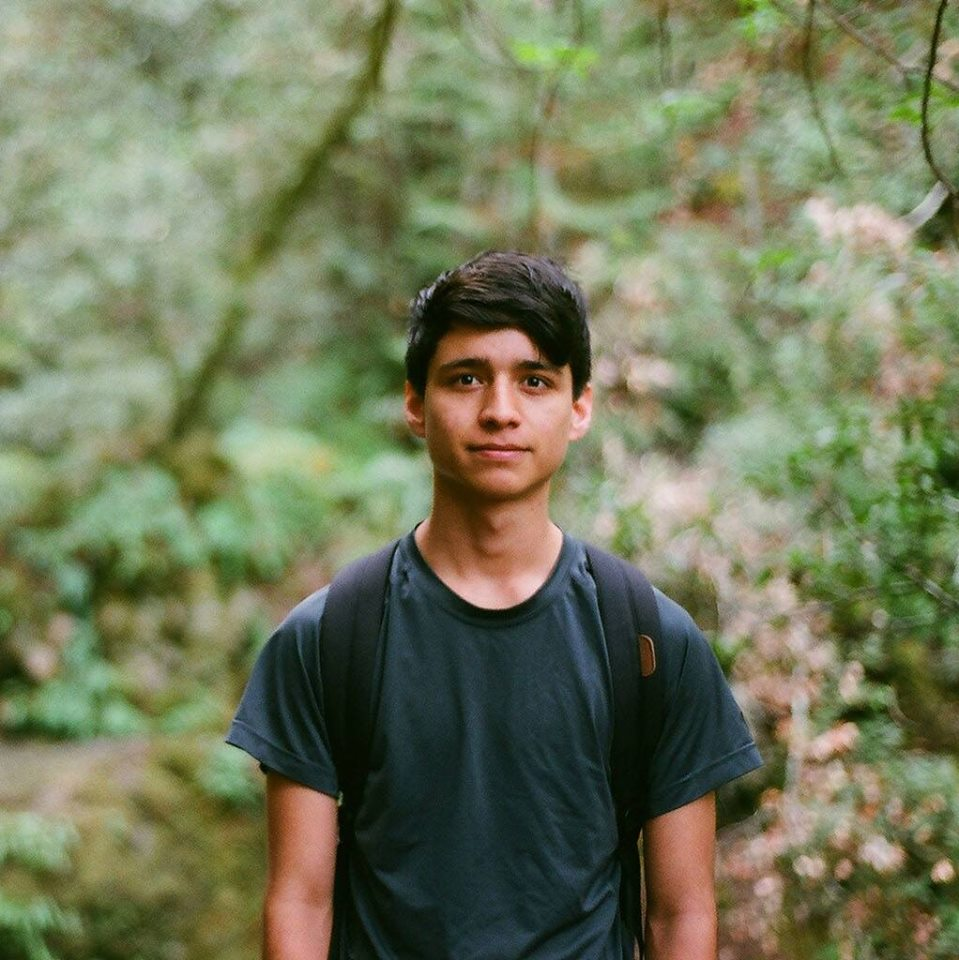

Name: Jade Manrique
Age: 20
Planet: Earth
Race: Mixed
Rank: Galatic Gunnery Sergeant
Name: Jade Manrique
Age: 20
Planet: Earth
Race: Mixed
Rank: Galatic Gunnery Sergeant
I am from Los Angeles and the San Francisco Bay Area. I moved to the Bay Area when I was 10. I consider the entire Bay Area as my hometown. I have not used the MUNI in 7 years and walk everywhere. Probably not the smartest but certainly my favorite time waster.
I have attended Santa Barbara City College and College of Marin. I was studying film studies, graphic design, and journalism at the time. Graphic design is something I have subconsciously been into since I was a kid. I always drew symbols and made fake menus for my house listing all the meals we would commonly cook.
Things I think are important:
Top Favorite Foods